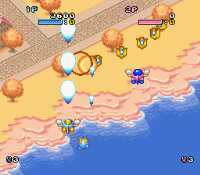

|


Review
Game Type: Overhead-View Shooter
The only Twinbee game ever released in the States was Stinger for the NES. Pop'n Twinbee for the Super Famicom leaves out Stinger's side-view sequences for a strictly overhead perspective. Your ship's abilities include punching bullets out of the way, bombing ground targets, and having options follow it in your choice of three formations. As before, two can play simultaneously.
Gameplay: 90/100
Probably the second-best shooter on the SNES, and it was never released in the U.S. Sigh... Not only do you have to worry about dodging airborne bullets, you have to devote some attention to dropping bombs on ground targets. This game will demand the full concentration of even the most skilled pilots. Not much in the way of weapons - there are only two types and neither can be powered up. Up to four options in any of three formations will add to your firepower a bit, though. The ability to punch enemy bullets out of the way is a nice touch, too. And of course it's always fun to have two players simultaneously.
Graphics: 90/100
Walking pineapples, pastel backgrounds, and little blobs with big eyes that shriek when they're shot. Better be secure in your manhood before you import this puppy, because it's a total cutefest. Not much in the way of special effects, but the stages are laden with vivid colors and bold artwork. Nice anime-esque cinemas, too.
Sound: 70/100
I've no problem with cute graphics, but cute music grates on my nerves a bit. Still, it's not too bad, and the sound effects are decent too.
Overall: 90/100
Don't be fooled by the kawaii looks. This shooter is as tough as any other. The look is are nice and the gameplay superb. Well worth importing if you're a shooter fan, and an absolute must if you need a two player game.
|